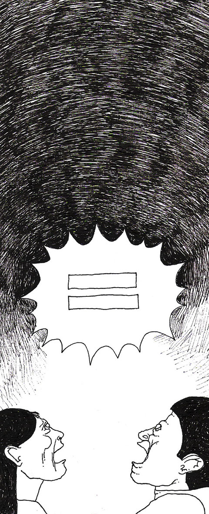

Relato para defender un beso lésbico
|  |
Sin afán de ser un manual de uso, ni mucho menos, escribo esto porque considero que compartir estas experiencias nos amplía la posibilidad de reconocer estrategias de resistencia y existencia. Existencia corporal, visual, táctil, de besos, complicidades.... Es que si mi expresión de amor le afecta, quien tiene el problema es usted, no yo!! Sábado 14 de Abril del 2012, eran aproximadamente las 11:30 pm, Bar Elvis - San José, entramos un grupo de aproximadamente unas 10 amigas veníamos en tour de celebración de una despedida de soltera y nos encontrábamos con la parte masculina de la celebración para el cierre. Marisol y yo como cualquier pareja nos besamos, hablamos, nos abrazamos y celebramos esto que se llama “gustarse mucho”. Se nos acerca el primer sujeto de seguridad, de paso estaba vestido de traje, y nos dice:
|
|
Por estrategia, nos acercamos al grupo de vuelta, y estando ahí llega el segundo tipo de seguridad, mucho más grande que el anterior, mucho más bravo que el anterior y también vestido de traje
Nosotras seguimos bailando, hablando con nuestras amigas y poniéndolas al tanto de lo que estaba pasando. Aparece de nuevo este segundo señor de seguridad y me hace una seña para que me acerque y hablarme solo a mí. Yo me niego y le digo que venga a hablarnos a todxs, porque es que este asunto no es un tema individual, no solo me toca a mí, nos toca a todxs, yo no quiero hablar en secreto, negociar por debajo o esconder lo que ya es obvio, que soy lesbiana, que beso a una chica y que me están diciendo que no puedo hacerlo.
En ese momento, sin querer discutir o negociar con alguien más la intensidad o las veces con las que nosotras decidimos besarnos (porque me parece ridículo) y ya con el permiso de quedarnos. Porque “nos dieron permiso de ser!!!!” (léase con tono irónico), le respondí:
Le di la mano y le agradecí a él también. Seguimos todas bailando, cantando y tomando, además de algunas miradas de desaprobación por parte de algunxs por ahí; pero no vi a nadie quejarse ni pedir que nos sacaran. Otra estrategia que aunque no tiene que ver con la denuncia pero si de autocuidado y para la reflexión, es nunca ir al baño sola, ni con Marisol, sino con gente que nos acompañe, porque no podemos arriesgarnos, porque la violencia existe y las represalias también. Y me enoja profundamente sentir que vivo con miedo, pero me alegra saber que he desarrollado redes seguras, que hay amigxs que nos cuidan y que están absolutamente dispuestxs a pelearse por nosotras, por la lucha de la visibilidad lésbica. Tener que amenazar, ser coherente y asertiva cuando se vive en el propio cuerpo la injusticia de la discriminación, tiene sus matices. Me alegra no ser sacada, que me traten como una igual, pero qué asqueroso sistema es este en el que tenemos que pelearnos, estar a la defensiva y sentirse amenazadas por el hecho de ser Lesbiana. Mis besos son mi derecho!!! |